Reset the Camera
The button is located underneath the view screen.
Format the SD Card
- Press MODE
- Navigate to MANAGE MEDIA
- Press EXEC
- Select MEDIA FORMAT
- Press EXEC
- Select the slot the SD Card is in
- Press EXEC
- Navigate to YES
- Press EXEC
- Navigate to YES
- Press EXEC
- Press OK after formating has finished
CAMERA FUNCTIONS: (LEFT SIDE)
- Rings from front to back -
FOCUS
ZOOM
IRIS
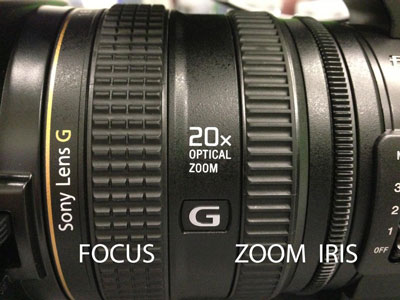
- ND (Neutral Density Filter) To adjust/compensate for very bright situations, especially outdoors, use the ND FILTER (1,2,3) as needed. ND filters are like sunglasses for the camera. Even in bright sunlight, try to keep your f/ stop (f/#) at f/8 or less. Set the ND FILTER with the switch on L-side of camera.
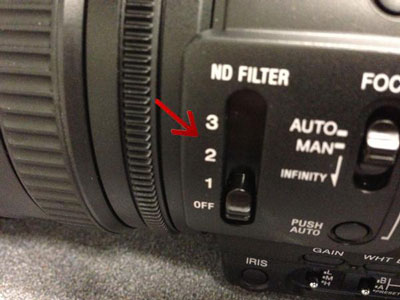
OFF = no filter – probably best for most indoor situations
ND #1 = 1/4 (2 f/stops less light)
ND #2 = 1/16 (4 f/stops less light)
ND #3 = 1/64 (6 f/stops less light)
- ZEBRA Turn ZEBRA ON/OFF with button on L-side – ZEBRA/ASSIGN 4. (Zebra = a stripe pattern for exposure assist) Suggested levels: 100 = maximum brightness. Other good options: 70 = avg. caucasian skin tone, 90 = near maximum brightness. MENU → DISPLAY SET → ZEBRA → LEVEL → 70-100+
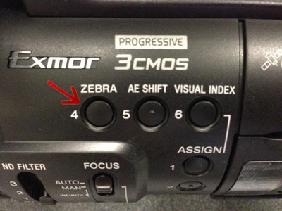
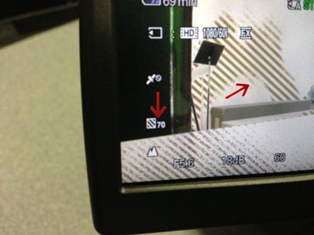
The zebra default is 70, meaning the brightness is 70% maximum brightness before overexposure (and loss of detail) occurs. Depending on the amount of white or bright areas of your shot, a majority of your image may have the zebra pattern with this setting. This is fine. Generally, if the most important (relevant) bright features of your shot have the zebra pattern at 70, your exposure is probably okay. If you press the zebra button and you do not have the zebra pattern, you may be overexposed or underexposed in those areas. After setting your iris, you can press the zebra button again to remove the pattern from the LCD. The zebra pattern never records to your media.
- AE SHIFT
We use the manual mode for setting our IRIS, GAIN, SHUTTER SPEED and WHITE BALANCE. In manual mode, the AE (automatic exposure) Shift button is not used.
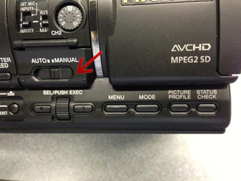
- VISUAL INDEX
The visual index can be used to quickly review the footage you have shot. Use the SEL/PUSH EXEC dial to navigate the visual index. Push the VISUAL INDEX button again to exit this mode.
- The ASSIGN Buttons are not used by default - see the OTHER SETTINGS below for suggestions
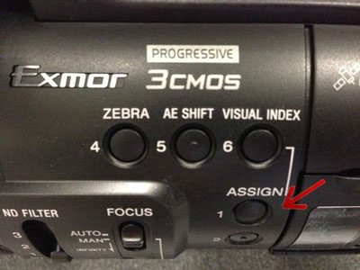
- FOCUS
Set to MAN (Manual) position
Note: You can press the PUSH AUTO button while in Manual Focus to do a quick AUTO FOCUS
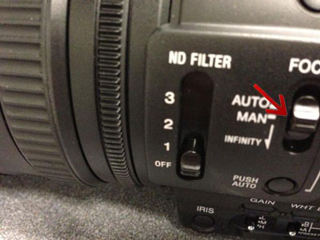
- IRIS - Press IRIS button on L-side for momentary Auto and change between Auto/Manual. You should see F# in display when set to Manual. Adjust with Iris Ring (smallest, rear most ring) on lens.
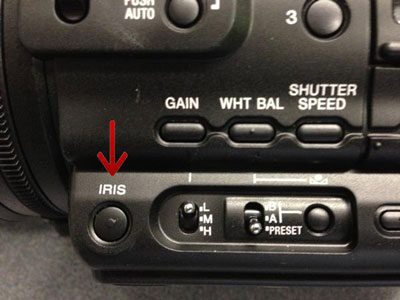
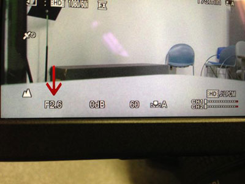
- GAIN - pressing this button displays the gain level in the LCD - The switch below the GAIN button adjusts the GAIN level
L is 0dB default
M is 9dB default
H is 18dB default
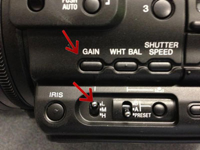
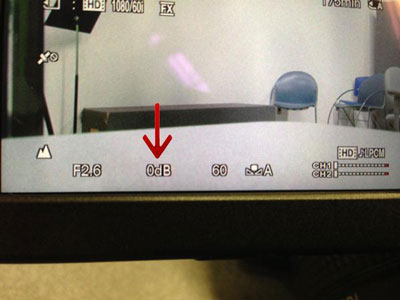
Set/adjust Gain. Press GAIN button to switch between Auto/Manual, and adjust level w/ L-M-H switch (normally, set dB as low as you can). To change L-M-H settings, MENU → CAMERA SET → GAIN SET.
- WHITE BALANCE -
Set/adjust WHITE BALANCE w/ switch on L-side (PRESET – A – B).
To adjust White Balance manually, use A – B switch and press button below the “manual” icon. A - setting A can be used to white balance manually. Fill the frame with a well-exposed (but not overexposed) white object or paper. Then press and hold the manual white balance button until the icon stops blinking in the LCD.
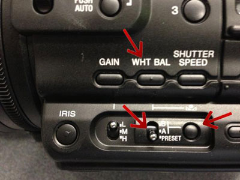

B - an additional setting you can use just like setting A
PRESET can be set for either INDOORS, OUTDOORS or MAN WB TEMP according to your shooting conditions. MENU → CAMERA SET → WB PRESET → INDOORS/OUTDOORS/ MAN WB TEMP.
- SHUTTER SPEED - double your frame rate to calculate a good approximate starting point at HD 1080/24p FX, start at a shutter of 48
at HD 720/60p FX, start at a shutter of 125
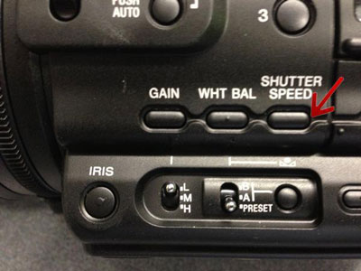
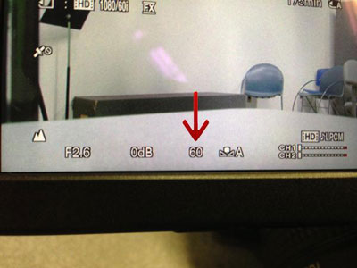
Set/adjust SHUTTER SPEED. Press SHUTTER SPEED button. When highlighted, adjust w/ thumb wheel/SEL/PUSH EXEC until appropriate setting, then press EXEC to lock (not highlighted). Set to 48 (1/48 sec.) for 1080/24p FX. If Shutter Speed is shown in degrees, you can change the display. Lower shutter speeds = more blur, higher speeds = sharper, less motion blur.
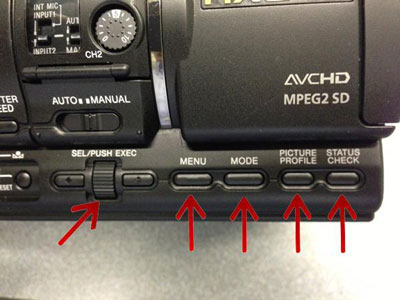
- MENU - press to access the menu functions - use the SEL/PUSH EXEC dial, and the forward/back arrows to navigate the menu
- MODE - changes from CAMERA, PLAY, EDIT, DUB/COPY and MANAGE MEDIA modes. You will mainly use CAMERA and PLAY (for playback). MANAGE MEDIA can be used to reformat the SD card.
- PICTURE PROFILE - used for color and black level settings. We will do all color adjustments in post-production. So, you do not need to use this function.
- STATUS CHECK - press this button and then use the DIAL to scroll through various checks, including audio levels, remaining battery, SD Card space, button assignments and output settings.
RECORD SETTINGS
You will normally use the following recording format → HD 1080/24p FX
MENU → select REC/OUT SET → REC SET → HD/SD SET → [ ]:HD [EXT:HD → EXEC
MENU → select REC/OUT SET → REC SET → REC FORMAT → HD 1080/24p FX → EXEC
(FX records in 24mbps while FH records in 16mbps)
Shoot in progressive (1080p):
to make better stills
so that your compressed video looks / plays better on a computer
so the graphics or animation look better
so it looks better on plasma or LCD displays
so you can repurpose to all of the above ( including interlace if needed)
When you want to achieve a slow motion effect in your editor, you can record HD 720/60p FX. (requires additional processing in your editor to achieve the effect)
SHOOTING CHECK LIST
- Set up tripod and level head, mount camera on tripod.
Put battery on camera – on back of camera. To remove battery: BATT RELEASE button on Back
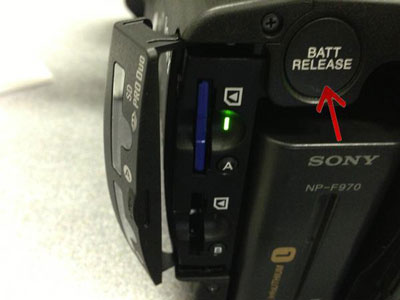
- Insert SDHC memory card. Open the cover on back L-side and insert card(s) w/ notched corner facing down. To eject the memory card, push-in on card and remove from slot. (When finished shooting, it’s recommended that you write protect your cards to prevent accidental erasure until the data has been successfully transferred,backed-up, and verified.)
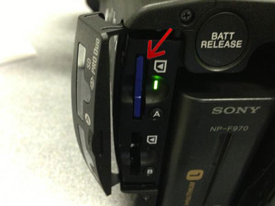
- POWER – ON/OFF – on R-side, push and hold green button, turn knob to ON (turn OFF for battery change).
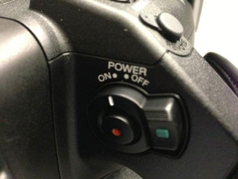
- Open LCD screen on top of camera or look in viewfinder (viewfinder will turn off when LCD is open if set to AUTO in MENU). Remember to close the LCD, with the LCD screen inward, to avoid damaging the screen, when you are not using the camera, and before you pack the camera.
- Do a full RESET, using a paper clip. Do NOT use a pen or anything that leaves a mark. Resetting will erase/reset all settings left from the previous user so you don't overlook some errant setting. Resetting will restore factory settings (except Picture Profile settings which will need to be reset separately) and you can then make changes as needed/wanted. ALSO RESET BEFORE RETURNING CAMERA
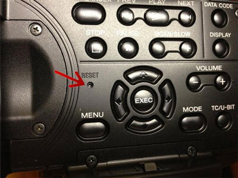
- To access the MENU, press the MENU button on L-side or top panel. To navigate through the menus, use the EXEC thumb-wheel and buttons on L-side, or the navigation buttons on top panel.
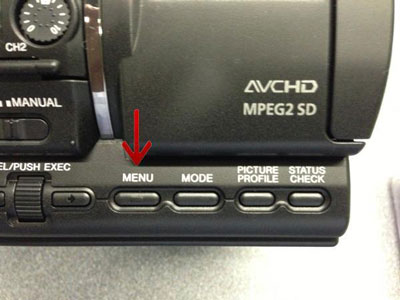
- Format the media card (erase ALL data and recover all recordable space). MODE → MANAGE MEDIA → MEDIA FORMAT → [YES] → OK.
- Open lens hood shutter (lens cover) w/ L-side lever.
Close lens cover before returning the camera to the case.
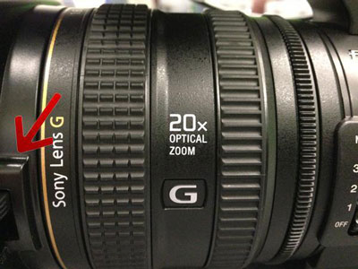
- Check lens for dust, smudges, etc. and clean if necessary – bulb syringe and/or microfiber cloth only.
- Zoom control/rocker is on R-side hand grip (W=wide/T=telephoto). Additional zoom control on top, at front of handle.
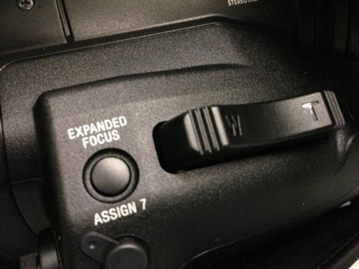
- RECORD (REC) START/STOP buttons are in 2 places – the RED button on the R-side hand grip POWER ON/OFF switch and on the top, at the front of the handle.
- Set viewfinder (VF) eye-piece focus to your eye (with LCD closed). Opening the LCD will turn-off the viewfinder (default = VF POWERMODE → AUTO) unless changed. Setting to ON will allow you to use both VF and LCD without closing the LCD. MENU → DISPLAY SET → VF POWERMODE.
- Make sure your VF, LCD and monitor are properly adjusted (brightness and contrast), to gauge accurate exposure. Adjust LCD/Viewfinder brightness (using >CAMERA SET >Color Bars, Type 1, for reference). MENU → DISPLAY SET → LCD BRIGHT AND LCD COLOR
- Keep most of the operating controls - focus, iris, gain, white balance, shutter speed - on Manual (Auto mode –Off). Set AUTO-MANUAL switch to MANUAL (L-side of camera). When set to MANUAL, you should see icons for all of these values in the viewfinder/LCD. You can turn these individual functions On/Off using the buttons on the left side of the camera.
ADDITIONAL SETTINGS:
- You can assign or change various ASSIGN buttons per operator preference if desired.
MENU → OTHERS → ASSIGN BUTTON → ASSIGN #.
Here some suggestions:
ASSIGN 1: MARKER (choose settings in DISPLAY SET → MARKER)
ASSIGN 2: STEADYSHOT (choose type in CAMERA SET → STEADYSHOT)
ASSIGN 3: COLOR BAR (suggest Type1 or 2, and TONE in CAMERA SET → COLOR BAR)
ASSIGN 4: ZEBRA (choose level in DISPLAY SET → ZEBRA)
ASSIGN 5: PEAKING (pick intensity and color [Medium-Yellow preferred by most] in DISPLAY SET → PEAKING) ASSIGN 6: VISUAL INDEX
ASSIGN 7: EXPANDED FOCUS (suggest Type2 – B&W – in DISPLAY SET → EXPANDED FOCUS TYPE)
- Push AND hold PUSH AUTO for temporary auto focus (while in manual mode), or the turn focus ring (largest, farthest forward ring on lens) until the desired subject matter is in focus.
- To change the display between feet/meters, use MENU → DISPLAY SET → FOCUS DISPLAY.
- You can use both EXPANDED FOCUS AND PEAKING (set w/ Assignable Buttons) as an assist to the check focus.
- Turn STEADY SHOT ON/OFF – using MENU or ASSIGN button. Turn OFF for tripod use, and ON for hand-held/non-tripod use. Levels of steadiness can be adjusted in the MENU. ACT mode is very aggressive and crops the picture area.
- Set TC (Time Code – normally set for Hours to parallel Roll #s). This is not necessary for your short projects, but it is absolutely necessary for longer projects. Accordingly, I suggest that you start to develop the habit and make it part of your regular set-up procedure. The TC will be displayed in the upper right corner of the LCD/VF with colons between the numbers (01:00:00:00). If there are no colons, press the TC/U-BIT button on the lower R-corner to change the display from U-Bits to TC.
MENU → TC/UB SET → TC PRESET → RESET → EXEC → PRESET → change Hour to match Roll # (e.g. Roll 1 =Hour 1 = 01:00:00:00) → EXEC (x 4) → OK. Then, set TC RUN → REC RUN and TC MAKE → PRESET
- You can create various custom “looks” with PICTURE PROFILE. These are NOT reset when you do a system reset! To return to default settings, each one of the profiles must be individually reset. Good lighting and proper exposure are more important than special camera settings. You can do post-production color correction rather than messing too much with the various PICTURE PROFILE Menu settings, such as Gamma, Color Modes and Levels, etc.
AUDIO SETTINGS:
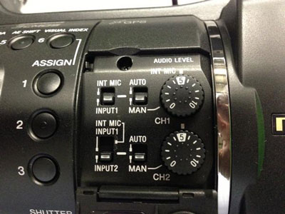
There are two audio channels. CH1 can be assigned to the INT MIC (internal microphone) or INPUT 1. CH2 can be assigned to the INT MIC, INPUT 1 or INPUT 2.
In most instances, the audio mode should be set to MAN (manual) and levels adjusted with the numbered dial.
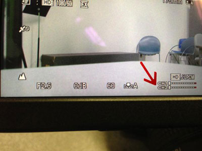
If you are only using 1 microphone, a ‘safety’ track can be recorded by selecting INPUT 1 for both inputs. The audio level for one channel can be dialed lower to prevent clipping (distortion) in the event of an unexpected loud audio source.
The level meter can be found on the LCD screen.
When needed, phantom power (MIC +48V) can be activated with the switches behind the XLR jacks.
Be sure to turn OFF phantom power (MIC +48V) before plugging in your microphone(s).
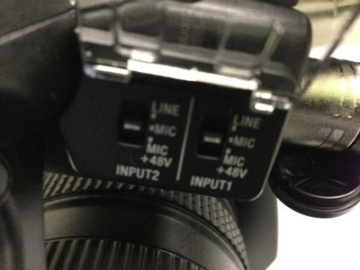
The headphone jack and HEADPHONE MONITOR switch can be found at the rear of the camera handle.
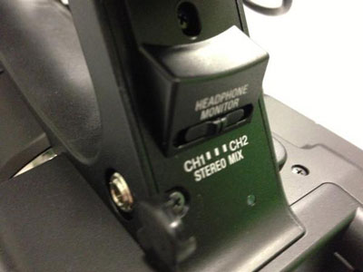